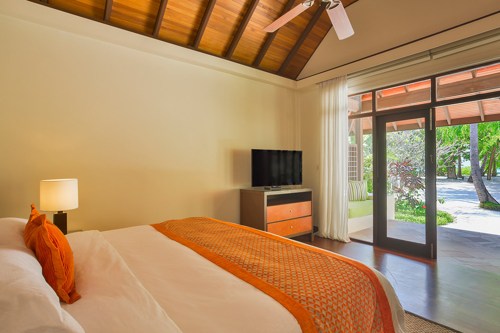
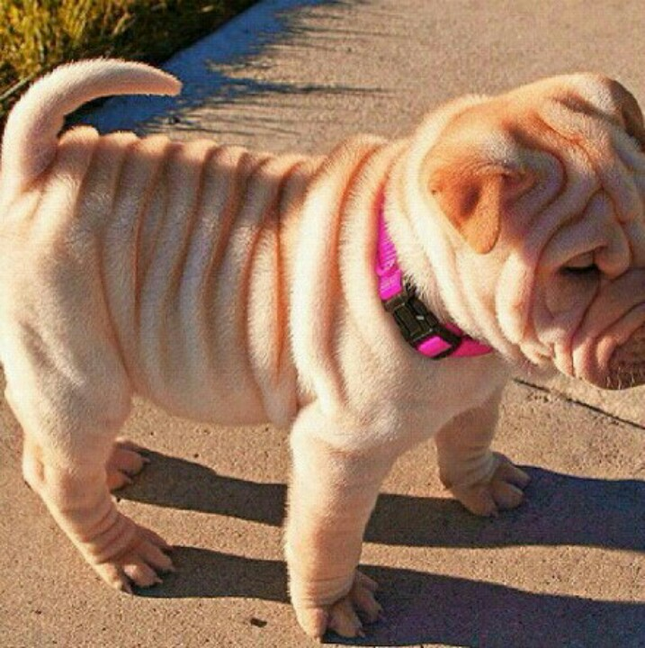

Resort Website
This site was designed using HTML and CSS. The site is intended to market one of the most popular resorts in Kenya where one can unwind, wine, dine and enjoy pure relaxation. It provides information on travel, accomodation, bookings and much more. To view the details of the website, please click here

Animal Shelter Website
This site is dedicated to highlighting the plight of abandoned animals. It specifically features pets which area up for adoption. It is designed using HTML and CSS with the able guidance of one Cornelius and James. To view the details of the website, please click here

Cupcake Website
This site was designed using HTML and CSS. It is a cupcake bakery site with a list of the major flavors that are done by the bakery. A special recipe link for all our customers is available on the site for them to bake cupcakes which leave them wanting to bake some more. To view the details of the website, please click here